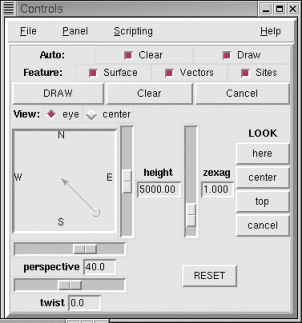

NVIZ Reference Manual
CONTENTS
Movement Panel
The Movement panel always appears at the top of the
Controls window. You use the Movement
panel to set the position, direction, and perspective of the view. As you
change movement options, a low resolution or wire grid of the surface
redraws (fast display mode) showing the results
of your changes.
-

OPTIONS
- Auto: Clear
- Clears the screen before drawing the surfaces (if selected).
- Auto: Draw
- Redraws the scene each time the view changes (if selected).
- Feature: Surface
- Draws all loaded surfaces (if selected).
- Feature: Vectors
- Draws all loaded vectors (if selected).
- Feature: Sites
- Draws all loaded sites files (if selected).
- Draw
- Draws selected files using the current viewing and lighting options.
- Clear
- Clears the screen to the background color.
- Cancel
- Cancels the drawing in progress.
- View: eye
- Sets the position box (directly below) to control the eye position
of the view. The view center remains unchanged.
- View: center
- Sets the position box (directly below) to control the view center
position. The eye position remains unchanged.
- Position Box
- If the eye view is selected, the position
box shows a puck with a direction arrow pointing to the center. The direction arrow indicates the look direction (azimuth). You click and drag the puck to change the current eye position. The box annotations are North, South, East, and West.
If the center view is selected, the position
box shows as a cross hair. You click and drag the cross hair to change the current center of view.
- Height
- Adjusts the viewer's height above the scene.
- zexag
- Adjusts the vertical exaggeration of the surface. As an example,
if the easting and northing are in meters and the elevation in feet,
a vertical exaggeration of .305 would produce a true (unexaggerated)
surface.
- Look here
- Allows you to select a point on the surface that becomes the new
center of view.
- Look center
- Resets the view to the original default center of view.
- Look top
- Sets the viewer directly over the scene's center position. This
top view orients approximately north south.
- Look cancel
- Allows you to move over the surface with no center of view.
- perspective
- Adjusts the viewer's angle of view.
- twist
- Rotates the scene about the horizontal axis. An angle of 0 is flat.
The scene rotates between -90 and 90 degrees.
- RESET
- Returns all current settings to their startup values.